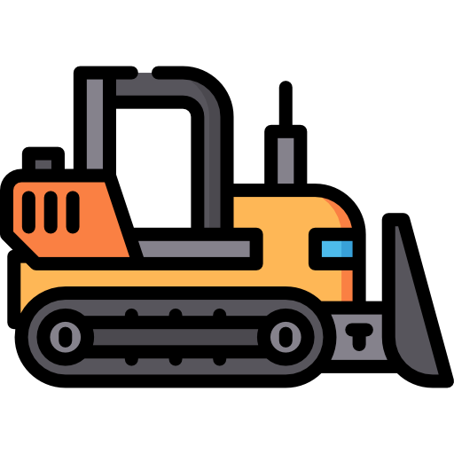
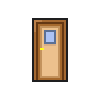
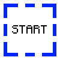

The project is all about pathfinding. It includes a custom level editor where you can make your own level and use the program to calculate the shortest path between 2 points. All pathfinding algorithm must contain some passable titles and an object that limits the virtual character movement. Besides that, I have some extra titles in my project to be more interesting. There is a door which can have 2 states: open and close. The player can pass through it when it’s open and it is an obstacle when it is closed. The doors can’t be controlled manually. The only way to open the door is to use a lever. This still sounds boring, doesn’t it? So, I added wires to create circuits with and logic gates to control how each door can be opened. This might feel overwhelming at the first look, but don’t worry! I have created a template map which will make sense to everything described above! You can download it by clicking on the button below.
You can import a level by simply drag and drop the file to the level grid. If you have imported a template level, click on the “Calculate the shortest path” button. Whenever the little guy is visible on the starting tile, you can start the simulation. By pressing the button SPACE you can walk through the simulation step-by-step. The character will complete the level the shortest way possible while interacting with the environment. Once it arrived to the destination tile, press the button SPACE once again to reset the level to its original state. If you want to cancel the simulation earlier, click on the “Cancel visualization” button.
In the next section there is a detailed description how to use the editor.
Important notes

Bulldozer - Remove the Wall with left click and everything else with right click.
Wall - Can't be passed. Used for pathfinding purposes.

Door - Can be activated by single cable. If it activated, it will become opened. Can only be endpoint.
Lever - Left-click to activate it, right click to make a connection with the logic gate or with a door. Can only be starting point.
Logic gates - Right click on the gate to connect it to a door or to an another logic gate.

Start/Finish point - Indicates start and finish points in pathfinding. Can't be removed.
Select an object:
Demolish objects:
Deselect an object:
Interacting with object:
Connecting objects:
Remove connections: